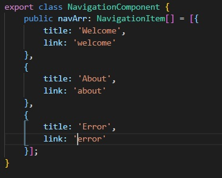
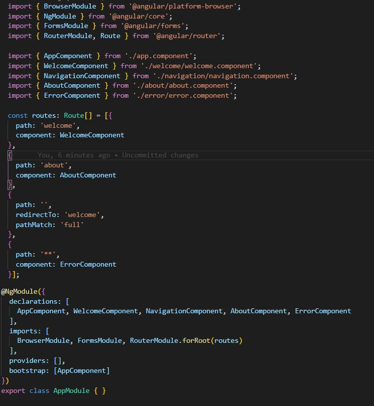
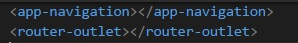
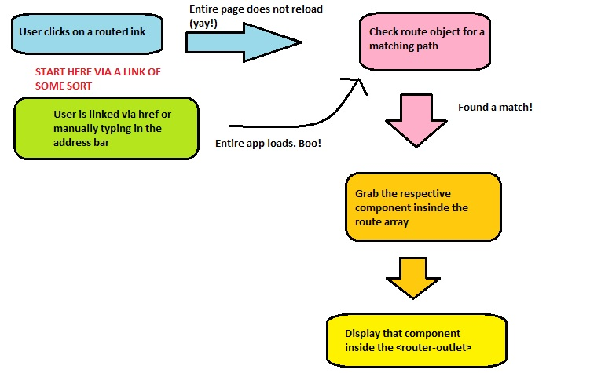

Now that we've got down how to build a component, let's start building a super basic router.
Before we do that, lets talk about what's different when it comes to using an Angular router. In a standard page, when you click on an href, the entire DOM reset and you load the page from scratch. This would be really bad for our application since when you load up an Abgular app on the browser, it is downloading the entire app. But when we use the Angular router properly, a link does not reboot the whole application. Instead it only loads what it needs to load. This gives us a huge benefit because now posting different links doesn't come with the same overhead that a standard page does.
Instead of thinking that a link takes you to a whole new page, it is a good idea for now to think as a link in router specifying what component you want to load. Furthermore, one of the nice parts about the router as we will see, is that you can control where you want that component to appear.
Since we're going to create a route that will display several different components, we need to create some more components. In class, we have an ErrorComponent (or FourOhFourComponent) and an AboutComponent.
Let's update our array of Navigation items to account for the routes we will be making. We want a link to our Welcome and About Component, and lets throw a link to the error page as well. We can remove it later. This is the final result:
You may notice that we are not adding .html in our link. This should reinforce the idea that we are linking components, not entire pages
So to create our route information, we will have to go into app.module.ts. First things first, we will have to import some new stuff. We will be importing RouterModule that will contain all of our Angular routing tools. The second item we will be importing is the interface Route that allow us to create a Route type. import both of these by placing the following line on the top of your app.module.ts:
import { RouterModule, Route } from '@angular/core';
Do you remember where modules go inside our decorator in app.module?
zzzz...
Well, he's not much help. The correct answer is in the imports section of our AppModule. Adding RouterModule by itself is not enough, however, we need to tack on forRoot() immediately after. This tells the router module what kind of routes you are declaring. You should always have one .forRoot, and only one. When we create sub routes later on, we will get into .forChild().
But as you type that in, you may notice that your linter is mad; it wants you to pass something in there, and if you hover over it, you'll notice it wasnts something of type Route[]. It wants an array of routes? Let's give it to.. it..
Above your decorator but below our imports is where we will declare our routes. Let me get you started and I'll explain whats going on:
const routes:Route[] = [{
path: 'welcome',
component: WelcomeComponent
},{
path: 'about',
component: AboutComponent
}]
Let's break this down. We are declaring a variable named routes that is an array of type Route. This means that RouterModule will be happy when we pass it in. Thie array consists of objects and we are giving it the following properties:
path
is a match. Since this is going to 'welcome', we want to display our welcome component, which is what we put in.We then repeat the process for about. So at the end of this, if the path is 'welcome', our welcome component is displayed. If that path is 'about', then the about component is displayed. Great!
But we're not stopping there. What if someone simply navigates to our app without a path. We can redirect them to the welcome component like so:
const routes:Route[] = [{
path: 'welcome',
component: WelcomeComponent
},{
path: 'about',
component: AboutComponent
},{
path: '',
redirectTo: 'welcome',
pathMatch: 'full',
}]
A few things to go over here: We are specifying this path as being empty. Think of this as the difference between localhost:4200 and localhost:4200/welcome. Also important is that in the redirectTo property, we are not telling it what Component to display, but the path we want to.. redirect to... hence the name. pathmatch ensure that our path match is exact.
But what if I go to somewhere that isn't welcome or about? What if I go to treats or toys?
Oh, now you're up. Fortunately, that is a good question. We can create what is called a catch-all that will select what component is displayed if none of the other match. We do that like so.
const routes:Route[] = [{
path: 'welcome',
component: WelcomeComponent
},{
path: 'about',
component: AboutComponent
},{
path: '',
redirectTo: 'welcome',
pathMatch: 'full',
},{
path: '**',
component: ErrorComponent,
}]
The ** acts as a wildcard that effectively calls everything. Now you may be thinking, "If that route catches everything, won't all our components go to ErrorComponent?". The answer lies in how the routes are read, angular will check the routes from the top down. Here's an illustration if we tried to go to treats:
(User goes to localhost:4200/treats)
(Start checking from the top)
const routes:Route[] = [{
path: 'welcome', (Is the path 'welcome'?)
component: WelcomeComponent (No, on the the next...)
},{
path: 'about', (Is the path 'about'?)
component: AboutComponent (No, on the the next...)
},{
path: '', (Is the path blank?)
redirectTo: 'welcome', (No, on the the next...)
pathMatch: 'full',
},{
path: '**', (Is the path anything?)
component: ErrorComponent, (Yes! Display ErrorComponent.)
}]
So now that we've got our array, we have to pass it into the routerModule. Since we name our route array routes, we put routes inside the routerModule inside our imports like so: routerModule.forRoot(routes)
Here's a screenshot of the final result:
So we've made our route, now we have to make sure our links are taking advantage of the angular router and not using href which would reload the whole page. Lets head on over to our navigation component where the links lie. You'll notice that we were using href before. Lets use the Angular property routerLink instead.
<div>
<ul>
<a [routerLink]="item.link"> {{ item.string }} </a>
</ul>
<app-login></app-login>
</div>
By using routerLink, we are telling this link that it will now adhere to the Angular router. Also note that since we used an Angular property (i.e. we wrapped it in the [] square brackets), we no longer need to use the interpolation brackets {{ }} to use our variable name. Angular properties are cool with variables.
Recall that I had mentioned earlier that we think of links in Angular not as what page to load, but what component to load, and that we would be talking about where to display said component. Now is that time; as of right now, the router knows what component to display, but doesn't know where to put the result. That is what <router-outlet></router-outlet> is for.
Where do you put it? Good question, where do we want the result of our link displayed? Inside the AppComponent underneath the Navigation component. So go into your app.component.html and it should look like this:
Save our app, click on the links, and watch the magic happen! Here's a chart explaining how the architecture works:
13 lessons later and your MS Paint skills are still non-existent.
Everyone's a critic.